Два монокулярных реконструктора — DA3-Giant-1.1 и VGGT-Omega-1B — прогнаны локально на одинаковых наборах кадров, и их облака точек, глубина и позы сравнены с эталоном. Для Tanks and Temples есть две схемы: 16 кадров и плотная — 100 кадров на ту же сцену. На страницах ниже облака можно вращать и переключать между методами и лазерным сканом.
По странице на сцену, всего 13 (5 — eth3d, 4 — tanks and temples, 4 — tanks and temples, 100 кадров). Мышь вращает, колесо зумит, правая кнопка сдвигает.
Сверху переключается облако (GT, DA3-Giant, VGGT-Ω или оба предсказания) и раскраска —
цветом пикселей или расстоянием до GT (зелёный — на поверхности, красный — дальше порога).
Каждая страница самодостаточна, кроме соседнего plotly.min.js.
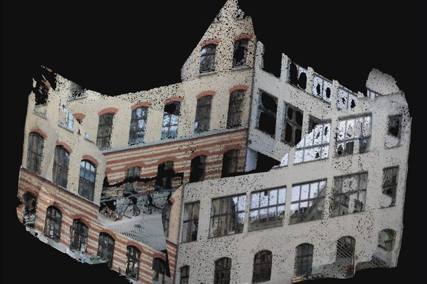
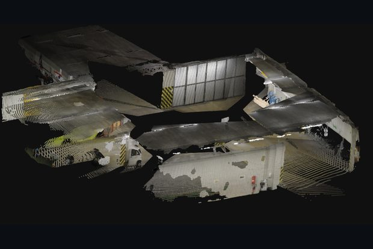
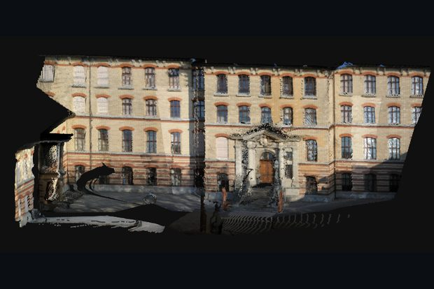
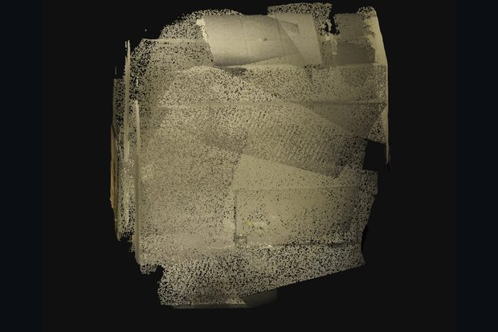
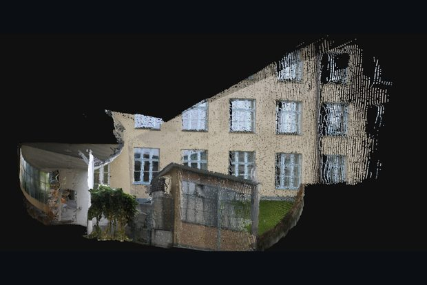
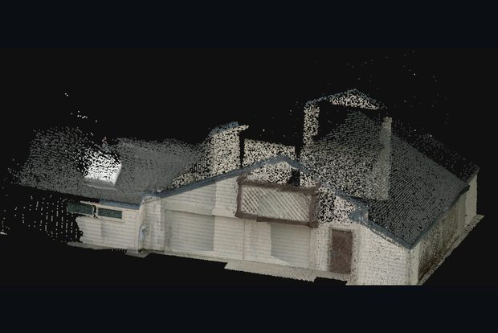
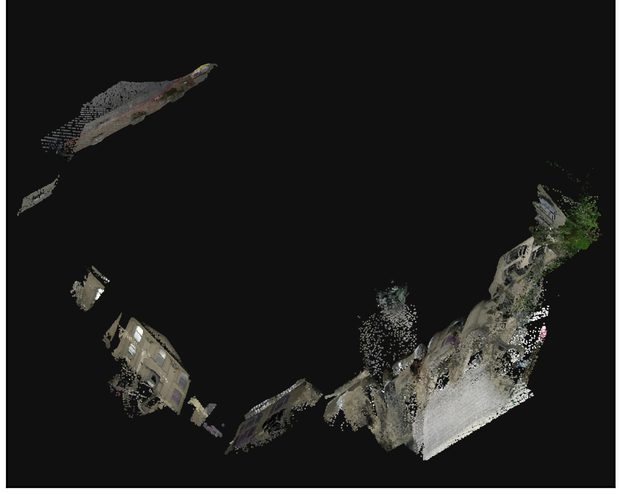
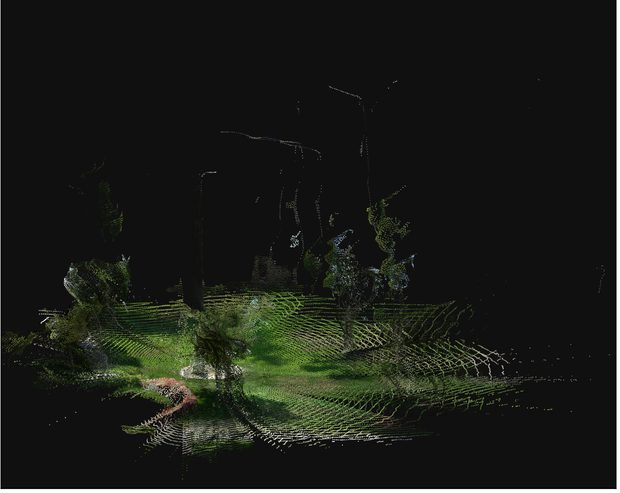
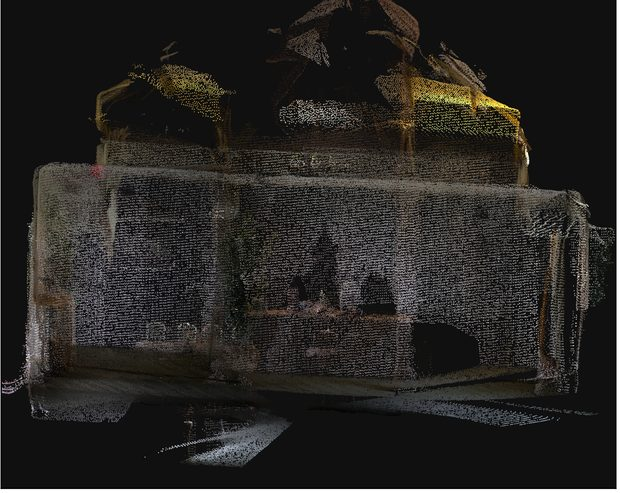
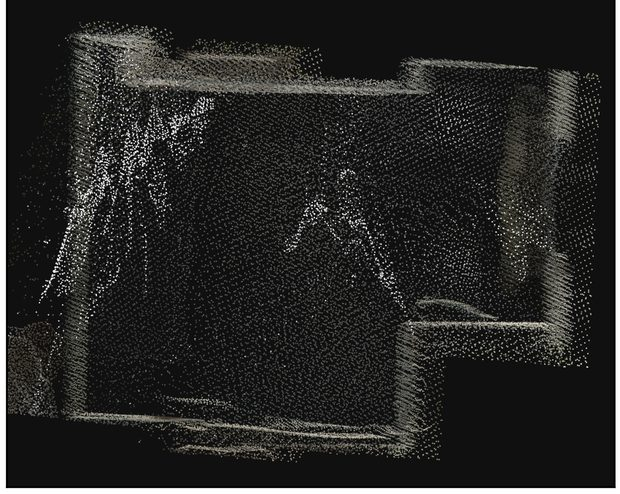
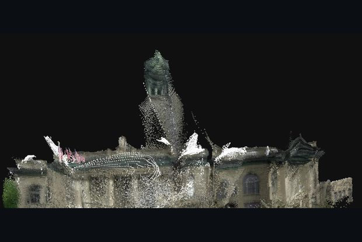
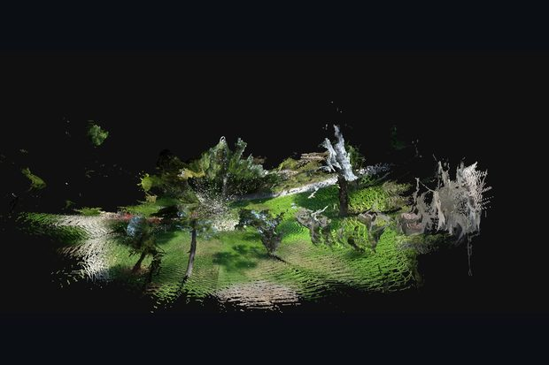
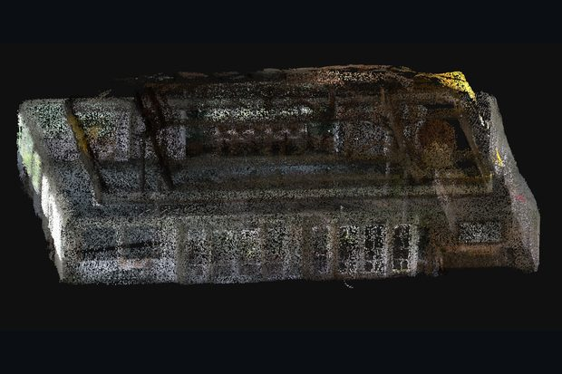
| сцена | метод | F@0.5% | F@1% | AbsRel (s+t) | rot, ° |
|---|---|---|---|---|---|
| courtyard | da3-giant | 0.931 | 0.966 | 0.0085 | 1.11 |
| courtyard | vggt-omega | 0.928 | 0.970 | 0.0056 | 0.55 |
| delivery_area | da3-giant | 0.855 | 0.881 | 0.0273 | 6.86 |
| delivery_area | vggt-omega | 0.928 | 0.972 | 0.0112 | 2.91 |
| facade | da3-giant | 0.961 | 0.976 | 0.0105 | 0.43 |
| facade | vggt-omega | 0.965 | 0.979 | 0.0082 | 1.40 |
| office | da3-giant | 0.807 | 0.937 | 0.0096 | 1.82 |
| office | vggt-omega | 0.898 | 0.966 | 0.0067 | 0.77 |
| terrace | da3-giant | 0.952 | 0.975 | 0.0268 | 1.30 |
| terrace | vggt-omega | 0.967 | 0.978 | 0.0059 | 0.44 |
| сцена | метод | F@0.5% | F@1% | точн. мед., см | rot, ° |
|---|---|---|---|---|---|
| barn | da3-giant | 0.462 | 0.677 | 10.6 | 0.48 |
| barn | vggt-omega | 0.527 | 0.767 | 10.7 | 0.64 |
| courthouse | da3-giant | 0.276 | 0.423 | 86.7 | 3.51 |
| courthouse | vggt-omega | 0.028 | 0.055 | 384.3 | 47.32 |
| ignatius | da3-giant | — | — | — | 0.54 |
| ignatius | vggt-omega | — | — | — | 0.44 |
| meetingroom | da3-giant | — | — | — | 0.46 |
| meetingroom | vggt-omega | — | — | — | 0.54 |
| сцена | метод | F@0.5% | F@1% | точн. мед., см | rot, ° |
|---|---|---|---|---|---|
| barn | da3-giant | 0.471 | 0.753 | 18.5 | 0.39 |
| barn | vggt-omega | 0.585 | 0.834 | 13.5 | 0.55 |
| courthouse | da3-giant | 0.384 | 0.586 | 61.6 | 1.69 |
| courthouse | vggt-omega | 0.379 | 0.546 | 57.9 | 3.68 |
| ignatius | da3-giant | — | — | — | 0.81 |
| ignatius | vggt-omega | — | — | — | 0.36 |
| meetingroom | da3-giant | — | — | — | 0.32 |
| meetingroom | vggt-omega | — | — | — | 0.23 |
| сцена | метод | F@1%, % | точн. мед., см | rot, ° |
|---|---|---|---|---|
| barn | da3-giant | 0.677 → 0.753 | 10.6 → 18.5 | 0.48 → 0.39 |
| barn | vggt-omega | 0.767 → 0.834 | 10.7 → 13.5 | 0.64 → 0.55 |
| courthouse | da3-giant | 0.423 → 0.586 | 86.7 → 61.6 | 3.51 → 1.69 |
| courthouse | vggt-omega | 0.055 → 0.546 | 384.3 → 57.9 | 47.32 → 3.68 |
| ignatius | da3-giant | — → — | — → — | 0.54 → 0.81 |
| ignatius | vggt-omega | — → — | — → — | 0.44 → 0.36 |
| meetingroom | da3-giant | — → — | — → — | 0.46 → 0.32 |
| meetingroom | vggt-omega | — → — | — → — | 0.54 → 0.23 |
Лучшее значение в каждой колонке выделено жирным. ETH3D: 5 сцен со зданиями, 10 кадров, официальный протокол. Tanks and Temples: 4 сцены в двух схемах — 16 и 100 кадров, лазерный GT есть только у barn и courthouse — у ignatius и meetingroom остаются позы. В последней таблице одна ячейка показывает пару «16 → 100».
Облако предсказания приводится в систему координат эталона через sim(3) по центрам камер (Umeyama), на ETH3D дополнительно уточняется ICP. F-score считается при порогах 0.5 % и 1 % диагонали эталонного облака. Для Tanks and Temples облако обрезано официальным полигоном GT и выровнено только по позам — без ICP; «точн. мед.» — медианное расстояние от точки предсказания до ближайшей точки лазерного скана.